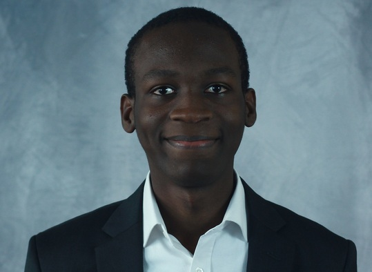

Bienvenue !
Je suis post-doctorant dans le département de Physique Appliquée et de Mathématiques Appliquées (APAM) de l'Université de Columbia. Mon encadrant est Michael Weinstein.
En Décembre 2023, j'ai soutenu la thèse intitulée Propagation des ondes dans des milieux quasi-périodiques, sous la supervision de Sonia Fliss et Patrick Joly.
Je m'intéresse à l'analyse mathématique et à la simulation numérique de phénomènes de propagation d'ondes en présence de milieux hétérogènes, périodiques ou quasi-périodiques.
Contact

APAM Department
Columbia University
200 S.W Mudd
Office 287A ET
New York, NY 10027
ka3012[AT]columbia[POINT]edu
Columbia University
200 S.W Mudd
Office 287A ET
New York, NY 10027
ka3012[AT]columbia[POINT]edu